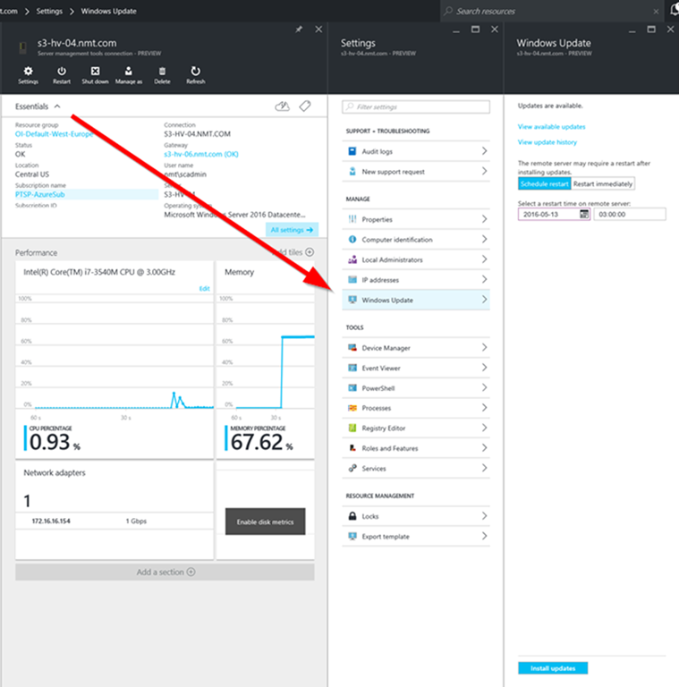
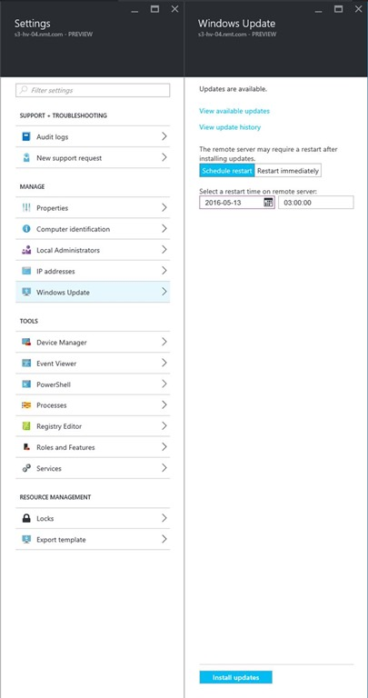
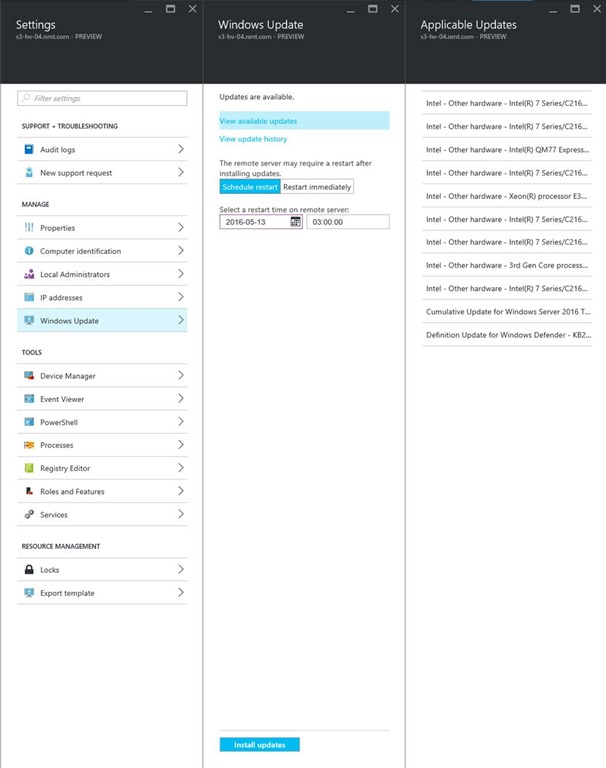
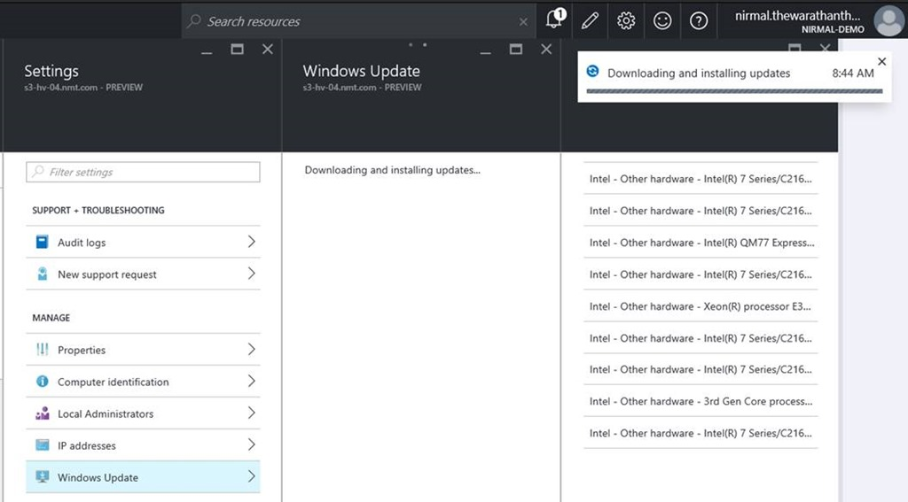
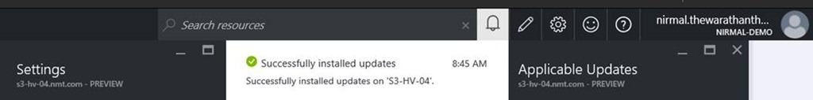
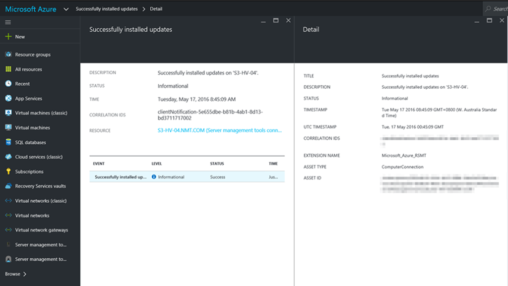
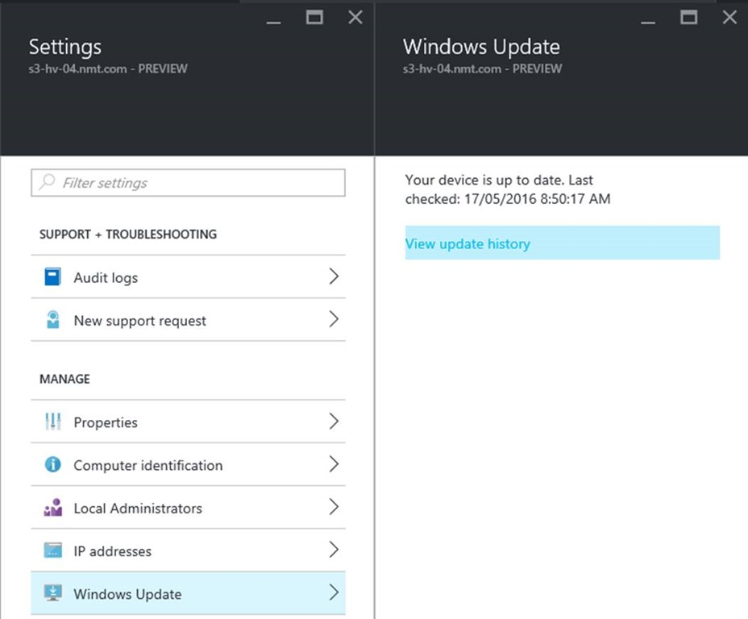
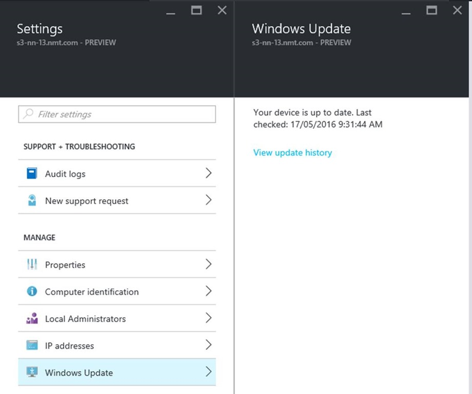

Windows Update using Azure Server Management Tools
Microsoft recently updated Azure Server Management tools with a new functionality, which allows remote execution of Windows updates against managed Windows Server / Nano Server instances using Azure Server Management tools. For those who are not familiar Azure Server management tools, I wrote a blog post recently announcing Azure Server Management Tools, which is a new method for managing Windows Server 2016 Servers and also Nano Servers. (https://nirmalt.com/2016/02/26/azure-server-management-toolsinstallation/)
Let’s have a look at the new patch management process using Server Management Tools.
The first step is to go ahead and login to Azure Server Management Tools. And then select a server which needs to be patched using Windows Updates.
You will notice that under settings, we now have a new functionally called “Windows Updates”.

Once you select Windows Update option, you will get two options
- View available updates
- View update history
As the name implies, if you select View available updates, it will trigger Windows Update client agent on the Server, and it will show information relating to any missing updates. As you can see from my example below, we can see that there are Updates available.

After selecting Available Updates. You will be able to see all the updates which are applicable for the server and then you can click on Install Updates to install them on the server.

Soon you will see a notification pop-up saying that the updates are being downloaded and installed on the Server.

It should take several minutes, depending on how many updates needs to be downloaded and deployed.

Once we have windows updates successfully installed, we can click on the notification pop-up and get more details

We could also use View update history option to see all the updates which were deployed part of the patch deployment process using Azure Server management tools.

If we trigger Windows Update scan once again, it will show that the device is up to date and doesn’t require any further updates.

More information, please have a look at the blog post below.